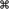

Keyboard Shortcuts Quick Reference
Table A-1 lists the system-reserved and commonly used keyboard shortcuts mentioned in the rest of this document.
As you implement keyboard shortcuts in your application, use this table to find:
Which key sequences are reserved by Mac OS X.
Users rely on these shortcuts to perform the specified actions no matter which application is currently running (these include shortcuts reserved for accessibility purposes). Do not override these shortcuts.
Which key sequences are recommended for common application tasks.
Users expect these shortcuts to mean the same thing from application to application. Provide these shortcuts if your application performs the associated tasks. You should avoid using these shortcuts for other purposes.
If a keyboard sequence is not listed in Table A-1 you can use it for a frequently used command in your application, if a shortcut is appropriate. For guidance on creating new keyboard shortcuts, see “Creating Your Own Keyboard Shortcuts” Be aware, however, that Apple may reserve other keyboard shortcuts in the future. For more information on the system-reserved keyboard shortcuts, see “Reserved Keyboard Shortcuts”
Note: With the exception of the system-reserved function keys F9, F10, F11, and F12, Table A-1 lists only combinations of two or more keys. For information on how to use specific single keys (such as Tab and Return), see “The Functions of Specific Keys”
Table A-1 groups together the primary key that is modified and variations of key sequences based on the primary key. In the interests of space, the table uses the following symbols to represent the modifier keys (these are the same symbols menus display):
 (Command)
(Control)
 (Option)
(Option) (Shift)
(Shift)
Some shortcuts in Table A-1 are accompanied by an icon. This means that you should not override the shortcut because the operating system uses it in some way.
A shortcut in Table A-1 that is not accompanied by an icon is recommended for applications that perform the associated task. If your application does not perform the task associated with a recommended shortcut, you should not use that shortcut to mean something else.
Primary key | Key sequence | Associated action | |
|---|---|---|---|
Space bar | Show or hide the Spotlight search field (when multiple languages are installed, may rotate through enabled script systems). | ||
Apple reserved. | |||
Show the Spotlight search results window (when multiple languages are installed, may rotate through keyboard layouts and input methods within a script). | |||
Apple reserved. | |||
Tab |
| Navigate through controls in a reverse direction. See “Keyboard Focus and Navigation.” | |
Move forward to the next most recently used application in a list of open applications. | |||
Move backward through a list of open applications (sorted by recent use). | |||
Move focus to the next grouping of controls in a dialog or the next table (when Tab moves to the next cell). See Accessibility Overview. | |||
Move focus to the previous grouping of controls. See Accessibility Overview. | |||
Esc | Esc | Open Front Row. | |
| Open the Force Quit dialog. | ||
Eject | Eject | Quit all applications (after giving the user a chance to save changes to open documents) and restart the computer. | |
| Quit all applications (after giving the user a chance to save changes to open documents) and shut the computer down. | ||
F1 | Toggle full keyboard access on or off. See Accessibility Overview. | ||
F2 | Move focus to the menu bar. See Accessibility Overview. | ||
F3 | Move focus to the Dock. See Accessibility Overview. | ||
F4 | Move focus to the active (or next) window. See Accessibility Overview. | ||
Move focus to the previously active window. See Accessibility Overview. | |||
F5 | Move focus to the toolbar. See Accessibility Overview. | ||
F5 | Turn VoiceOver on or off. See Accessibility Overview. | ||
F6 | Move focus to the first (or next) panel. See Accessibility Overview. | ||
Move focus to the previous panel. See Accessibility Overview. | |||
F7 | Temporarily override the current keyboard access mode in windows and dialogs. See Accessibility Overview. | ||
F9 | Tile or untile all open windows. | ||
F10 | Tile or untile all open windows in the currently active application. | ||
F11 | Hide or show all open windows. | ||
F12 | Hide or display Dashboard. | ||
`(grave accent) | ` | Activate the next open window in the frontmost application. See “Window Layering.” | |
| Activate the previous open window in the frontmost application. See “Window Layering.” | ||
| Move focus to the window drawer. | ||
- (hyphen) | Decrease the size of the selected item (equivalent to the Smaller command). See “The Format Menu.” | ||
| Zoom out when screen zooming is on. See Accessibility Overview. | ||
{ (left bracket) | Left-align a selection (equivalent to the Align Left command). See “The Format Menu.” | ||
} (right bracket) | Right-align a selection (equivalent to the Align Right command). See “The Format Menu.” | ||
| (pipe) | Center-align a selection (equivalent to the Align Center command). See “The Format Menu.” | ||
: (colon) | Display the Spelling window (equivalent to the Spelling command). See “The Edit Menu.” | ||
; (semicolon) | Find misspelled words in the document (equivalent to the Check Spelling command). See “The Edit Menu.” | ||
, (comma) | Open the application's preferences window (equivalent to the Preferences command). See “The Application Menu.” | ||
| Decrease screen contrast. See Accessibility Overview. | ||
. (period) | Increase screen contrast. See Accessibility Overview. | ||
? (question mark) | Open the application's help in Help Viewer. See “The Help Menu.” | ||
/ (forward slash) |
| Turn font smoothing on or off. | |
= (equal sign) | Increase the size of the selected item (equivalent to the Bigger command). See “The Format Menu.” | ||
Zoom in when screen zooming is on. See Accessibility Overview. | |||
3 |
| Capture the screen to a file. | |
| Capture the screen to the Clipboard. | ||
4 |
| Capture a selection to a file. | |
| Capture a selection to the Clipboard. | ||
8 |
| Turn screen zooming on or off. See Accessibility Overview. | |
| Invert the screen colors. See Accessibility Overview. | ||
A | Highlight every item in a document or window, or all characters in a text field (equivalent to the Select All command). See “The Edit Menu.” | ||
B | Boldface the selected text or toggle boldfaced text on and off (equivalent to the Bold command). See “The Edit Menu.” | ||
C | Duplicate the selected data and store on the Clipboard (equivalent to the Copy command). See “The Edit Menu.” | ||
Display the Colors window (equivalent to the Show Colors command). See “The Format Menu.” | |||
Copy the style of the selected text (equivalent to the Copy Style command). See “The Format Menu.” | |||
Copy the formatting settings of the selected item and store on the Clipboard (equivalent to the Copy Ruler command). See “The Format Menu.” | |||
D |
| Show or hide the Dock. See “The Dock.” | |
D | Display the definition of the selected word in the Dictionary application. | ||
E | Use the selection for a find operation. See “Find Windows.” | ||
F | Open a Find window (equivalent to the Find command). See “The Edit Menu.” | ||
Jump to the search field control. See “Search Fields.” | |||
G | Find the next occurrence of the selection (equivalent to the Find Next command). See “The Edit Menu.” | ||
Find the previous occurrence of the selection (equivalent to the Find Previous command). See “The Edit Menu.” | |||
H | Hide the windows of the currently running application (equivalent to the Hide ApplicationName command). See “The Application Menu.” | ||
Hide the windows of all other running applications (equivalent to the Hide Others command). See “The Application Menu.” | |||
I | Italicize the selected text or toggle italic text on or off (equivalent to the Italic command). See “The Format Menu.” | ||
Display an Info window. See “Inspector Windows.” | |||
Display an inspector window. See “Inspector Windows.” | |||
J | Scroll to a selection. | ||
M | Minimize the active window to the Dock (equivalent to the Minimize command). See “The Window Menu.” | ||
Minimize all windows of the active application to the Dock (equivalent to the Minimize All command). See “The Window Menu.” | |||
N | Open a new document (equivalent to the New command). See “The File Menu.” | ||
O | Display a dialog for choosing a document to open (equivalent to the Open command). See “The File Menu.” | ||
P | Display the Print dialog (equivalent to the Print command). See “The File Menu.” | ||
Display a dialog for specifying printing parameters (equivalent to the Page Setup command). See “The File Menu.” | |||
Q | Quit the application (equivalent to the Quit command). See “The Application Menu.” | ||
| Log out the current user (equivalent to the Log Out command). | ||
| Log out the current user without confirmation. | ||
S | Save the active document (equivalent to the Save command). See “The File Menu.” | ||
Display the Save dialog (equivalent to the Save As command). See “The File Menu.” | |||
T | Display the Fonts window (equivalent to the Show Fonts command). See “The Format Menu.” | ||
Show or hide a toolbar (equivalent to the Show/Hide Toolbar command). See “The View Menu” and “Toolbars.” | |||
U | Underline the selected text or turn underlining on or off (equivalent to the Underline command). See “The Format Menu.” | ||
V | Insert the Clipboard contents at the insertion point (equivalent to the Paste command). See “The File Menu.” | ||
Apply the style of one object to the selected object (equivalent to the Paste Style command). See “The Format Menu.” | |||
Apply the style of the surrounding text to the inserted object (equivalent to the Paste and Match Style command). See “The Edit Menu.” | |||
Apply formatting settings to the selected object (equivalent to the Paste Ruler command). See “The Format Menu.” | |||
W | Close the active window (equivalent to the Close command). See “The File Menu.” | ||
Close a file and its associated windows (equivalent to the Close File command). See “The File Menu.” | |||
Close all windows in the application (equivalent to the Close All command). See “The File Menu.” | |||
X | Remove the selection and store on the Clipboard (equivalent to the Cut command). See “The Edit Menu.” | ||
Z | Reverse the effect of the user's previous operation (equivalent to the Undo command). See “The Edit Menu.” | ||
Reverse the effect of the last Undo command (equivalent to the Redo command). See “The Edit Menu.” | |||
Change the keyboard layout to current layout of Roman script. | |||
Extend selection to the next semantic unit, typically the end of the current line. | |||
Extend selection one character to the right. | |||
Extend selection to the end of the current word, then to the end of the next word. | |||
Move focus to another value or cell within a view, such as a table. See Accessibility Overview. | |||
(left arrow) | Change the keyboard layout to current layout of system script. | ||
Extend selection to the previous semantic unit, typically the beginning of the current line. | |||
Extend selection one character to the left. | |||
Extend selection to the beginning of the current word, then to the beginning of the previous word. | |||
Move focus to another value or cell within a view, such as a table. See Accessibility Overview. | |||
(up arrow) | Extend selection upward in the next semantic unit, typically the beginning of the document. | ||
Extend selection to the line above, to the nearest character boundary at the same horizontal location. | |||
Extend selection to the beginning of the current paragraph, then to the beginning of the previous paragraph. | |||
| Move focus to another value or cell within a view, such as a table. See Accessibility Overview. | ||
(down arrow) | Extend selection downward in the next semantic unit, typically the end of the document. | ||
Extend selection to the line below, to the nearest character boundary at the same horizontal location. | |||
Extend selection to the end of the current paragraph, then to the end of the next paragraph (include the blank line between paragraphs in cut, copy, and paste operations). | |||
| Move focus to another value or cell within a view, such as a table. See Accessibility Overview. |
© 1992, 2001-2003, 2008 Apple Inc. All Rights Reserved. (Last updated: 2008-06-09)